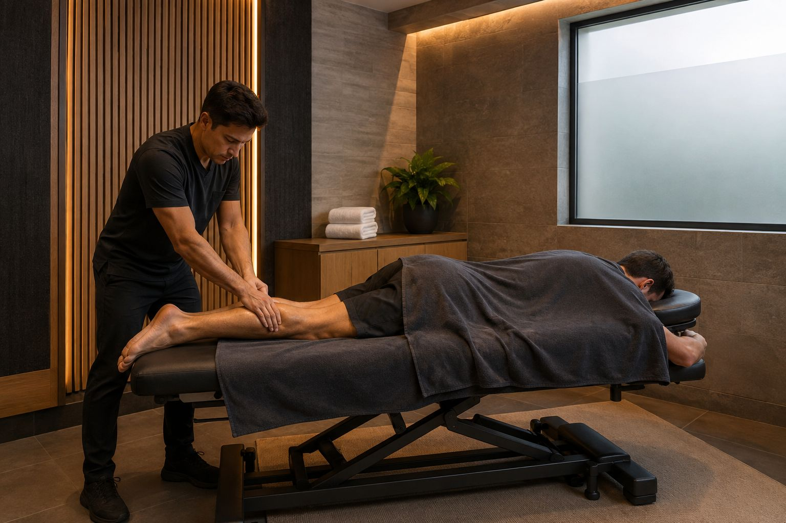
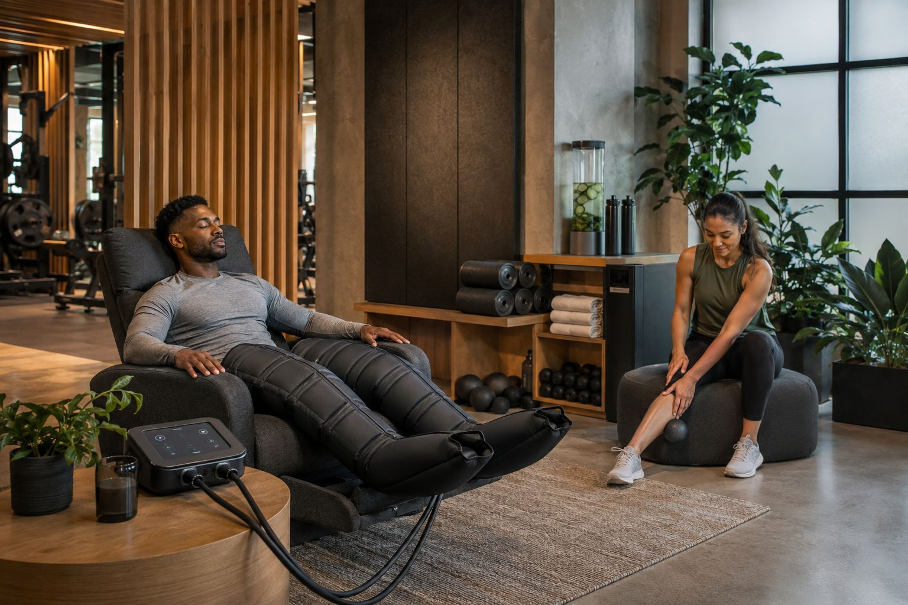
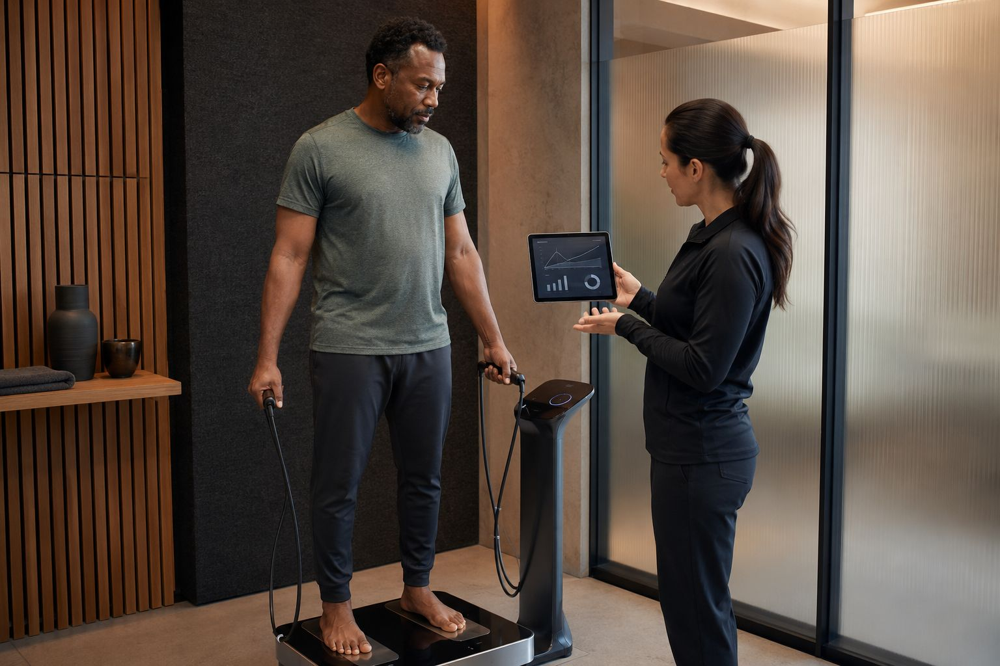

Massage Room
Een rustige ruimte voor herstel en begeleiding tussen intensieve trainingsblokken.

Recovery
Rust, mobiliteit en eenvoudige opvolging zorgen ervoor dat leden hun week beter kunnen verdelen en hun training beter kunnen volhouden.
Hersteltools
Een rustige ruimte voor herstel en begeleiding tussen intensieve trainingsblokken.

Voor cooling-down, ademwerk en lichte herstelbewegingen.

Een visuele reminder dat meten en bespreken hand in hand kunnen gaan.

Een logische plek voor mobiliteit, voorbereiding en rustige afbouw.
Herstelplan
Recovery wordt het sterkst wanneer het deel uitmaakt van de normale trainingsflow. We maken het daarom praktisch, zichtbaar en eenvoudig bespreekbaar.
De bedoeling is niet om alles te vertragen, maar om slim ruimte te creëren voor consistente training.